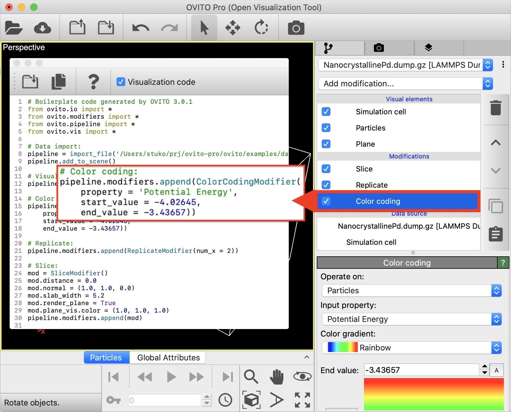

Python code generator pro
{kind=link}
OVITO Pro includes a Python code generation function, which can turn any data pipeline
created with the graphical user interface into a corresponding sequence of Python script statements,
which may subsequently be executed outside of OVITO to automate data post-processing or visualization
workflows. While you interactively adjust the parameters of modifiers, the code generation function
produces corresponding script statements for OVITO’s Python programming interface.
The generated source code may be saved to disk, further customized if desired,
and then run using the embedded Python script interpreter ovitos or any regular Python interpreter after installing the
ovito Python module (see here).
Video showing the Python code generator of OVITO Pro: https://youtu.be/sAGpCIBlWyk
The Python code generator is invoked by selecting from the menu. The code generator window displays the dynamically generated source code, which gets updated in real-time while you make changes to the data pipeline or a modifier’s settings.
You can activate the option Include visualization code to let OVITO additionally generate code statements that set up the virtual camera, render settings, and the visual appearance of the dataset exactly as you prescribed it in the graphical user interface. This option is useful if you are going to use the generated Python script for automating image and animation rendering tasks.
Supported features
The code generator can generate Python code for the following aspects of a visualization scene:
Data file import (all arguments of the
ovito.io.import_file()function)Visual elements
Modifiers
Viewport layers
Viewport camera setup
Rendering engine configuration
Image/animation render settings
Manual modifications you make to the imported model in the GUI, e.g. changing the colors/radii of particle types
The following aspects are not covered by the code generator yet:
Data export to an output file
Key-frame based parameter animations
Multiple pipelines in one scene or branched pipelines